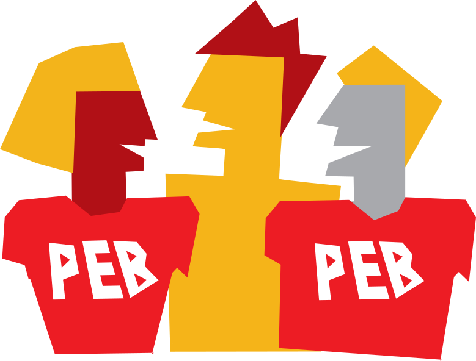

O que é o PEB
O Programa Escola Brasil é a iniciativa de voluntariado corporativo do Santander Brasil. Desde 1998, quando foi criado, o PEB tem apoiado em média 250 escolas de educação básica das redes municipais e estaduais, beneficiando quase 125 mil alunos anualmente.
Nossos Objetivos
- Contribuir para a melhoria da qualidade da escola pública de Educação Básica por meio da participação voluntária dos funcionários e estagiários do Santander.
- Oferecer oportunidades estruturadas de voluntariado para favorecer e estimular a participação social dos funcionários, estagiários seus familiares, amigos e clientes.
- Ampliar a visibilidade da importância do envolvimento da sociedade na causa da educação.
Como os Voluntários Podem Atuar
Os voluntários contam com o suporte permanente da equipe do PEB e com o Portal Voluntariado Santander, onde encontram todas as orientações para a realização das atividades e compartilham suas experiências.
Em Núcleos Voluntários
Constituem um grupo de voluntários que, em parceria com uma escola pública, definem as ações a serem realizadas com base no planejamento da instituição e neste calendário. A partir do que foi programado, os voluntários mobilizam sua rede de relacionamentos e executam pelo menos duas ações por ano.
Pontualmente
Participam eventualmente das atividades desenvolvidas pelos Núcleos de Voluntários. Através do Portal do PEB, esses voluntários ficam sabendo o tipo de ajuda que os Núcleos necessitam e oferecem suas habilidades e disponibilidades.
Em Campanhas Institucionais
O envolvimento acontece apenas durante as iniciativas institucionais que mobilizam todos os funcionários – voluntários ou não –, em torno de um esforço comum. Nessas campanhas, o interessado tem a oportunidade de experimentar o voluntariado e, se gostar, pode passar a atuar em um núcleo ou como voluntário pontual.